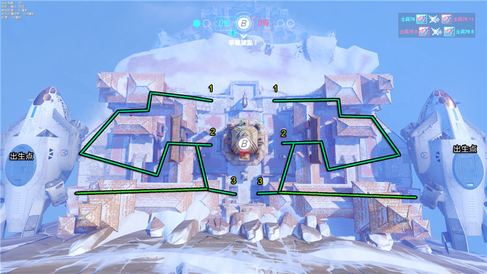
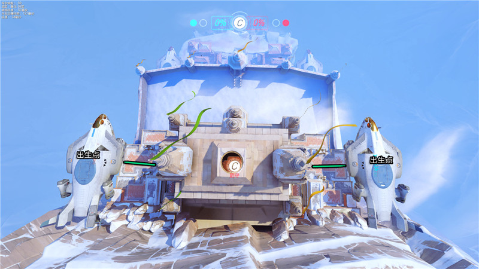
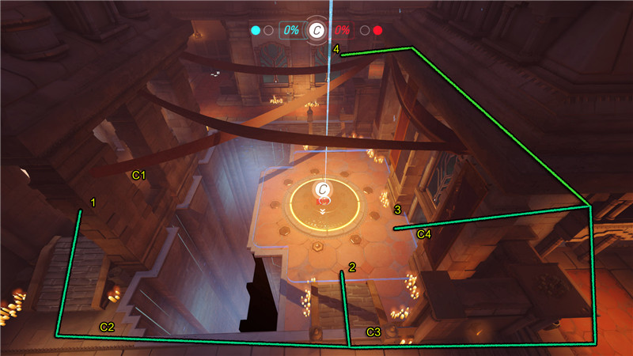

尼泊尔是典型的抢点图。双方需要争夺的点均在建筑物的内部。
上图为尼泊尔的第一张地图，双方抢夺A点。可以很清楚的从鸟瞰图发现，此类地图是对称的设计，而双方出生点分别在地图的左侧和右侧的飞机里面。 可以选择的进攻路线有三条。线路1绕路地图的上方，可以从A点的上方切入。线路2直接走正面，但是切记在A点正面只有围墙，无法进入，只有A点侧面才有两个口可以进入。如图所示，橙色的标记即为A点侧面的入口。线路3则是从出生点的下方机尾位置出来，直接沿着地图下方前行，途中需穿过一组房屋的内部，其优点是从侧面打击敌方，协助正面的队友，缺点是此线路距离A点距离稍远，无法第一时间配合队友，推荐远程攻击类的英雄走此路。 推荐的防守点A1、A2。正对A点的两个门口，有效打击A点内部的敌人，需提防容易被齐火的危险。
上图为尼泊尔的第二张地图。与第一张图不同的是，B点有四个口，上下左右均可进入。双方还是出生在地图的左右两侧。可以选择的进攻路线有三条。线路1从地图的上方进攻。线路2是直接正面进攻。线路3从出生点的下方机尾位置出来，直接沿着地图下方前行，途中需穿过一组房屋的内部，可有效从B点下方的入口打击里面的敌人，而且这条路也是偷袭敌方的好选择，缺点是容易孤军深入，需提防被Gank。 没有推荐特别的防守点是因为此图围绕着B点周边均可以部署防御势力，而B点的内部防守的英雄可以在建筑的角落里面埋伏，等待前来的敌人。
上图为尼泊尔的第三张地图。双方还是出生在地图的左右两侧。从出生点直接向前走就可到达需要抢夺的C点所处的建筑内部。 如图所示，图片最上方左侧有一个浅蓝色的圆点，而右侧有一个红色的圆点，意味着己方获得了一局的胜利而敌方也是这样，因此进入了最终局C点的抢夺
此图为尼泊尔的第三张地图C点所处位置的内部示意图。C点所处房间的内部上下两部分均为对称设计。 可选择的进攻线路有4条。线路1 走左侧，可以直接走上左侧的长廊，通过三根柱子的间隔处可以向C点发起进攻，也可以沿着长廊从左翼进攻敌方。线路2直接从C点的正面进攻。线路3从右翼进攻，然后从C4处的小门里面向外进攻。线路4也是从右翼进攻，但是可以通过右侧的走廊直接走到敌人的后方，可以牵制或者骚扰敌方。 推荐的防守点：C1可在此处埋伏，是个攻守兼备的点，需要提防前方敌人的进攻。 C2可以直接打击C点内部的敌人。 C3从C点的正面防守。 C4从右翼的小门里面防守。